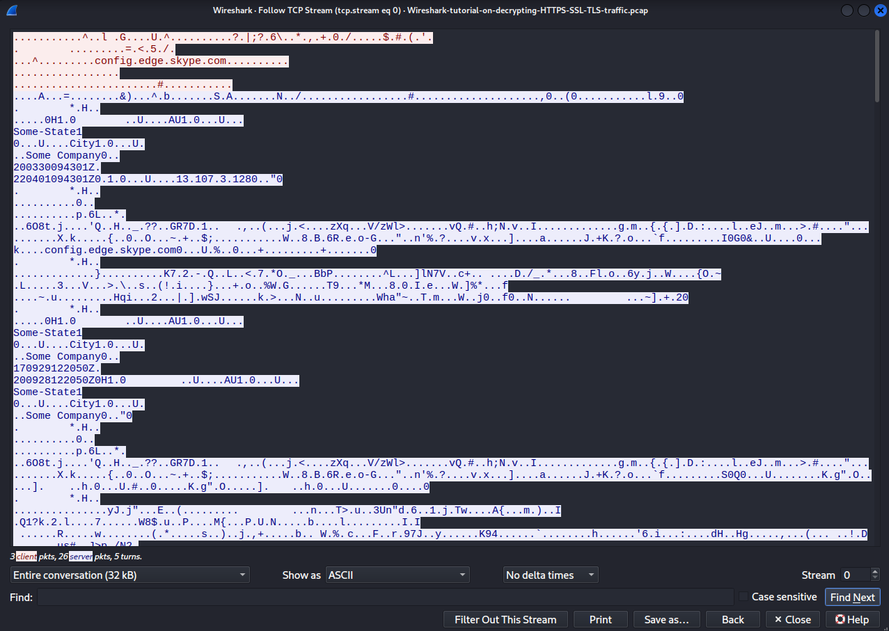
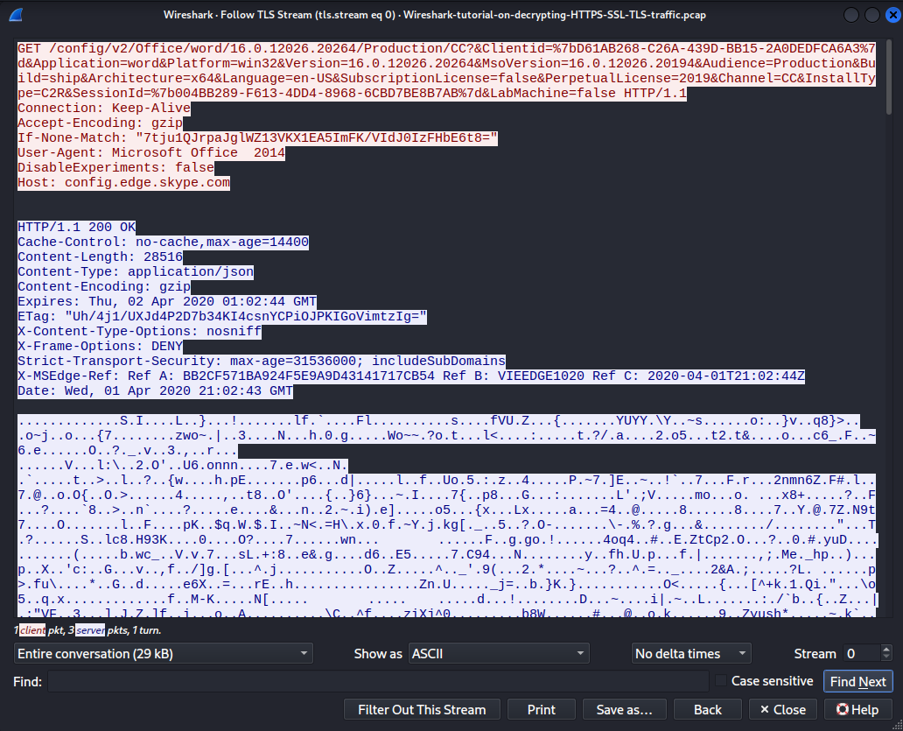
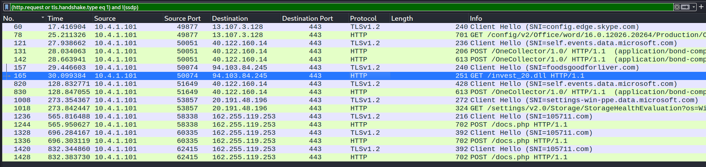
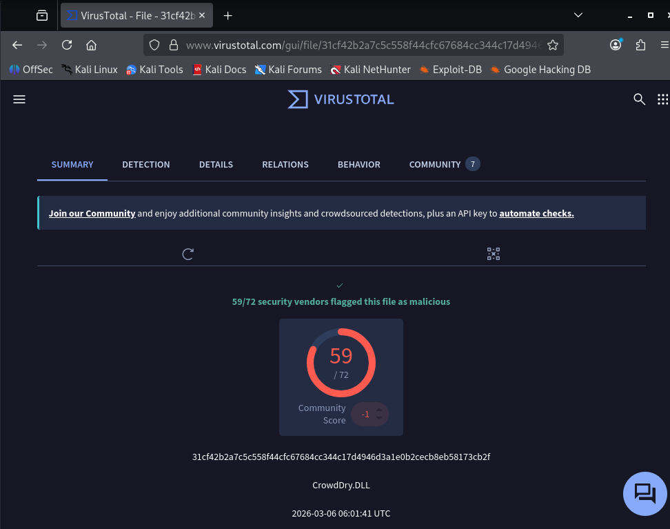
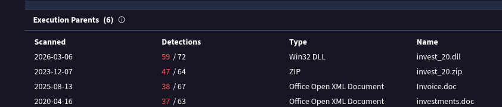
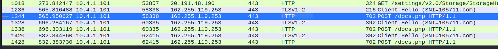
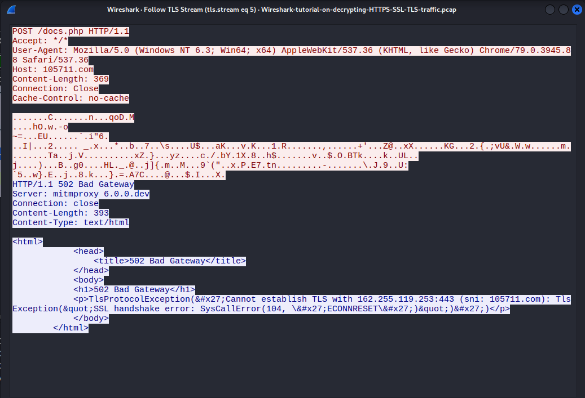
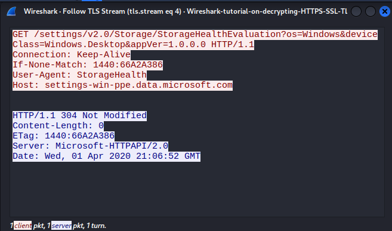
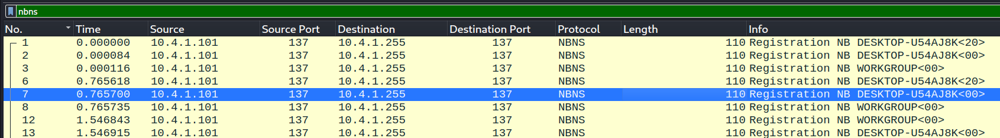

Network Traffic Analysis using Wireshark
In this first exercise I am given a pcap file and a txt file containing TLS keys. The objective is to use these keys to decrypt the network traffic and analyze the communication of a particular system. My goal is to identify signs of infection and find out what happened. Using Wireshark, this is essentially the kind of task you would encounter working on a blue team.
Objective
I'd heard "blue team" thrown around a lot before starting this, but I wanted to actually understand what the work looks like day to day, not just the term. I'd used Wireshark before in school labs, but always in a fairly abstract way, never with a "something happened here, figure out what" framing. This exercise, the first in Hackersplot's Blue Team Series on network traffic analysis, seemed like a good low-stakes way to get a feel for that kind of work: given a pcap file and a set of TLS keys, decrypt the traffic, and figure out whether a machine had been compromised — and if so, how.
Environment
- A packet capture (.pcap) of network traffic
- A TLS key log file (Needed to decrypt the capture)
- Wireshark, for traffic analysis
- VirusTotal, fir scanning a suspicious file against ultiple anivirus engines
- A Kali Linux VM, for a safe environment to experiment in
Method
I opened the pcap file in Wireshark. To be able to read the traffic I first had to import the TLS keys under Preferences → Protocols → TLS, since all the communication would otherwise just show up as encrypted data. I knew this from the video, but it's worth noting that this only works if you have access to private keys or a pre-master secret log, which you rarely have in a real-world scenario.
Before Decryption:

After Decryption:

With the TLS keys loaded, my first goal was to get a high-level overview of the network activity. Rather than looking at raw traffic immediately, I wanted to focus on initiated connections and HTTP requests, as these are the most likely places to spot suspicious behaviour. The filter used here was introduced in the video course as a solid starting point, and after looking at each component it makes sense why; it's designed to focus on the most relevant traffic for malware analysis while removing background noise that would only clutter the view.
The display filter used:
(http.request or tls.handshake.type eq 1) and !(ssdp)
- http.request displays all HTTP requests sent across the network, including GET, POST, and others. This is useful because malicious actors often use HTTP requests to exfiltrate data from a machine or to communicate with a command-and-control server, often without the user knowing.
- tls.handshake.type eq 1 filters for TLS Client Hello messages, giving a quick overview of every TLS connection initiated — essentially a list of all the domains and servers the machine tried to connect to. Useful for spotting suspicious domains and establishing a timeline of network activity. (For reference, type 2 would show Server Hellos, and type 11 would show certificates.)
- !(ssdp) filters out background noise. Pcap files often contain a lot of routine traffic that isn't relevant to the investigation, and SSDP is one of the most common examples.

One of the HTTP requests stood out immediately: a GET request for a .dll file. A DLL (Dynamic Link Library) is a file containing code and functions that multiple programs can share and use simultaneously. In malware analysis, DLLs are particularly relevant since they're commonly associated with two types of attacks: DLL hijacking, where malware replaces a legitimate DLL with a malicious one so a trusted program unknowingly executes the malware, and DLL injection, where malware injects its own DLL into a running process to hide inside it.
To investigate further, I exported the file directly from Wireshark (something only possible because the traffic had already been decrypted) via File → Export Objects → HTTP, selecting the invest_20.dll file. I then uploaded it to VirusTotal to try to identify what type of malware this was.

The results were conclusive: 59 out of 72 security vendors flagged the file as malicious. The file was identified as CrowdDry.DLL, with the hash:
31cf42b2a7c5c558f44cfc67684cc344c17d4946d3a1e0b2cecb8eb58173cb2f
A hash acts as a unique fingerprint for a file, used to identify and track specific malware samples.

VirusTotal also revealed the execution parents of the DLL — files previously observed delivering it, including invest_20.zip, invest_20.dll, Invoice.doc, and investments.doc. This points to a classic phishing delivery chain: a victim receives an investment-themed Word document, opens it, and embedded macros download and execute the malicious DLL without the user realizing anything is wrong. The investment-themed naming is a deliberate social engineering tactic designed to appear legitimate.
Looking at the imported DLLs gave further insight into the malware's capabilities:
| Import | Capability |
|---|---|
| KERNEL32.dll | File and process manipulation |
| USER32.dll | Interaction with the Windows UI and input |
| WS2_32.dll | Network communication |
| ADVAPI32.dll | Access to the Windows registry and security functions |
| ole32.dll | COM object interaction, often used for inter-process communication |
The combination of network functions and registry access alongside process manipulation is a strong indicator of malicious intent. A legitimate DLL serving a simple purpose would rarely need all of these capabilities together. This suggests the malware was likely designed to communicate with an external server, manipulate system processes, and potentially establish persistence on the infected machine.
Further evidence gathering: what does the malware do on the network?
Having confirmed the file was malicious through VirusTotal, I returned to the capture to observe how it actually behaved on the network. After the initial GET request that downloaded invest_20.dll, the traffic showed several POST requests to docs.php on 105711.com (IP 162.255.119.253) — a domain with no legitimate purpose, strongly suggesting attacker-controlled infrastructure.


Following the TLS stream of one of these requests revealed the malware sending obfuscated data back to this external server. This is a hallmark of C2 (command-and-control) communication, likely an attempt to exfiltrate data or await further instructions. The server responded with a 502 Bad Gateway error, indicating the C2 infrastructure was unreachable at the time of capture. The fact that multiple POST requests were made suggests the malware retried the connection after initial failure; based on this, the exfiltration was likely unsuccessful.
This confirmed CrowdDry.DLL as a data-stealing or backdoor type malware.So, not something that simply sits passively on the machine, but something that actively attempts to communicate with an external server to send stolen data or receive commands from the attacker.
Evaluating the remaining traffic
Not all traffic in the capture was suspicious. One stream initially caught my attention : a GET request that, at first glance, seemed potentially related to the infection given the unfamiliar IP and port. Investigating further revealed it was communicating with settings-win-ppe.data.microsoft.com, a legitimate Microsoft domain. The request was a standard GET to /settings/v2.0/Storage/StorageHealthEvaluation, sent by the Windows StorageHealth service, with the server responding 304 Not Modified — meaning nothing had changed since the last check. This was normal Windows telemetry, unrelated to the infection.

Reflection: Novel Doesn't Mean Nefarious
Going in, I assumed anything with an unfamiliar IP or port was worth flagging as suspicious by default. What I learned here is that unfamiliarity alone isn't evidence — a lot of legitimate background noise (OS telemetry, health checks, update services) looks just as unremarkable-but-unfamiliar as something malicious would, at least until you actually dig into what's being requested and why. The distinguishing factor wasn't the IP or port at all, it was the content and behavior of the request: a standard telemetry check-in with a "nothing changed" response looks nothing like a C2 beacon once you actually follow the stream. It's a good reminder that context matters more than surface-level unfamiliarity, and that it's worth taking the time to investigate before dismissing or flagging something.
Which exact machine was infected?
For incident reports it's often important to identify exactly which machine is infected, preferably by name as well as IP. By applying the nbns filter in Wireshark, I was able to identify the hostname of the infected machine. The source IP 10.4.1.101 registered itself as DESKTOP-U54AJ8K (indicated by the <00> suffix, which identifies the workstation service).

Combined with the rest of the traffic analysis, this confirmed that DESKTOP-U54AJ8K at 10.4.1.101 was the infected machine, compromised via a phishing document that delivered the CrowdDry.DLL backdoor.
Reflection: what "blue team work" actually turned out to mean
I went into this mostly curious about what the catchphrase "blue team" actually referred to in practice, and this exercise gave me a much more concrete answer than I expected. It wasn't abstract theory — it was a specific, traceable sequence: decrypt the traffic, spot the anomaly (a GET request for a .dll), pull the file, confirm it's malicious, then go back into the capture to reconstruct what it actually did on the network and who it belonged to. What stuck with me most was how much of it is just deliberate, patient narrowing — filtering out noise, following one suspicious thread at a time, and being willing to rule things out (like the Microsoft telemetry) just as carefully as ruling things in. I'd used Wireshark before, but always as a "here's a filter, apply it" exercise. Doing it with an actual "what happened here" framing made it click in a way it hadn't before, and left me wanting to look into network forensics and malware analysis further.
Overall Takeaways
- TLS decryption via a key log file only works with access to private keys or a pre-master secret log — a rare condition outside of a lab, but a good illustration of exactly why encrypted traffic is normally opaque to defenders.
- A single suspicious artifact (a .dll download) can be traced end-to-end: from the initial HTTP request, to a VirusTotal-confirmed hash, to its delivery chain (phishing document → macro → DLL), to its live C2 behavior on the network.
- Signature/hash-based tools like VirusTotal are powerful but only as good as what's already been documented — they confirm known threats rather than reveal unknown ones.
- Unfamiliar IPs or ports are not evidence of compromise by themselves; context and actual request content matter more than surface-level unfamiliarity.
- Hostname resolution (via nbns) matters for incident reporting — identifying the affected machine by name, not just IP, is part of producing an actionable result.